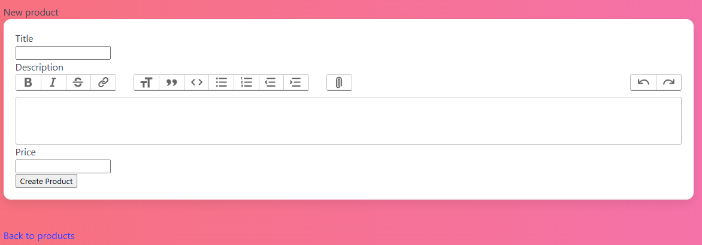

Building E-commerce with Ruby on Rails
Case study: Implementing MVC architecture and full-stack development.
After working with C++ and mastering Git versioning, I decided to dive into full-stack web development with Ruby on Rails (RoR). Rails is a powerful framework that provides a solid structure and pre-built components, allowing developers to focus on features rather than boilerplate code.
Model View Controller (MVC)
MVC implementation inside Rails helped me logically structure the entire project. Models represent store data like products and categories, Views handle how data is displayed in the browser, and Controllers act as the intermediaries ensuring a smooth flow through the application.
Development Environment: WSL2
When installing Rails on Windows, I decided to use WSL2 (Windows Subsystem for Linux 2). This provided a fully-fledged Linux environment right on Windows, making the installation and subsequent work with Rails absolutely smooth, just like on a native Linux or macOS system.

The core of my project was building a fictional e-commerce store. I explored image optimization, shopping cart management, and the Rails Asset Pipeline for efficient styling with frameworks like Bulma and Tailwind CSS.
Reflection & Professional Growth
Building a fictional e-commerce store using Rails was intensive, but it introduced me to a lot of web development concepts. I gained a solid foundation in CSS through the Rails Asset Pipeline and learned to style efficiently using modern frameworks like Bulma and Tailwind CSS.
Key Challenges Overcome
- Integrating Trix editor with Active Storage.
- Working with SQLite and complex CSV data imports.
- Configuring the environment for Windows using WSL2.
Technical Takeaways
- Deep understanding of MVC architecture.
- Effective troubleshooting using official documentation.
- Productive workflow setup within VS Code.
"These obstacles forced me to delve deeper into the documentation and look for solutions in Ruby on Rails guides. I learnt how to troubleshoot effectively—skills that will be invaluable in my future projects."
Through this project, I gained a solid understanding of database interactions and the importance of data backup. This experience has equipped me with the skills and confidence to take on more complex web development projects in the future.